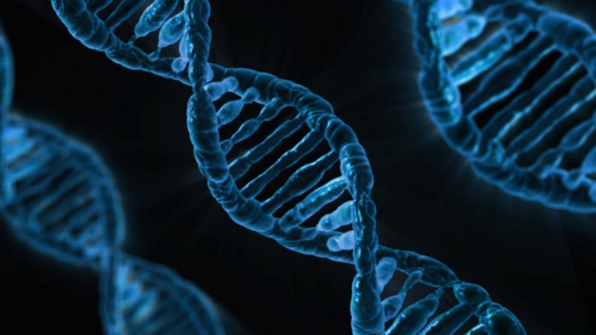
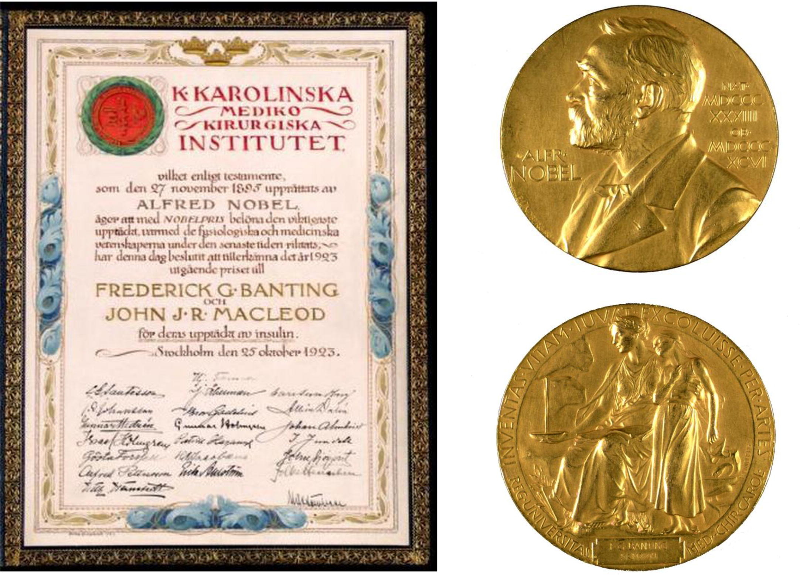

DESCOPERIREA PENICILINEI
Penicilina a marcat începutul erei antibiotice, fiind descoperită în anul 1945 de Fleming,Florey și Chain, salvând milioane de vieți și revoluționând medicina. Înainte de penicilină, infecțiile bacteriene erau o cauză majoră de deces. Fără tratamente eficiente, multe infecții, care astăzi sunt ușor de tratat, erau letale. De exemplu, infecțiile de tipul pneumoniei, septicemiei și meningitei adesea nu puteau fi vindecate, iar chirurgiile aveau un risc mult mai mare de a duce la infecții mortale. Odată cu descoperirea și aplicarea penicilinei, tratamentele pentru infecțiile bacteriene au fost revoluționate. Aceasta a fost prima substanță capabilă să distrugă bacteriile dăunătoare fără a afecta grav celulele corpului uman. Penicilina a fost un simbol al începutului ere antibiotice, iar utilizarea sa pe scară largă a salvat milioane de vieți. Această descoperire a schimbat profund tratamentele infecțioase și a avut un impact imediat asupra supraviețuirii în războaie, chirurgie și îngrijirea pacienților. Antibioticele sunt fundamentale în tratamentele moderne și continuă să salveze vieți până astăzi.
DESCOPERIREA STRUCTURII ADNULUI
Descoperirea structurii ADN-ului în 1953 de către James Watson, Francis Crick și
Maurice Wilkins a fost o piatră de hotar în știința geneticii și a avut un impact revoluționar
asupra medicinei moderne. Înțelegerea modului în care informația genetică este stocată,
transcrisă și transmisă a permis cercetătorilor să descifreze procesele fundamentale ale vieții
și să dezvolte noi abordări în tratamentele medicale.
Una dintre cele mai importante implicații ale descoperirii structurii ADN-ului a fost avansarea
în diagnosticarea bolilor genetice. Odată ce am înțeles cum se structurează și funcționează
genele, cercetătorii au putut identifica mutațiile genetice care cauzează boli ereditare, cum
ar fi hemofilia, fibroză chistică sau anumite forme de cancer. Acest lucru a dus la dezvoltarea
testelor genetice care permit depistarea precoce a acestor boli și, în unele cazuri,
intervenții preventive.

DESCOPERIREA INSULINEI
Descoperirea insulinei reprezintă unul dintre cele mai importante momente
din istoria medicinei. În 1921, doi cercetători canadieni, Frederick Banting
și Charles Best, au reușit să izoleze pentru prima dată insulina, un hormon
esențial pentru reglarea glicemiei din sânge, secretat de pancreas. Această
descoperire a revoluționat tratamentul diabetului, o boală care până atunci
era fatală, fără un tratament eficient.
Banting, inspirat de lucrările anterioare ale cercetătorilor, a avut ideea
de a extrage insulina din pancreasul câinilor pentru a o testa pe oameni.
Împreună cu Best, care i-a fost asistent, a reușit să izoleze o substanță
care, administrată intravenos, reducea nivelul zahărului din sângele
animalelor. Experimentul lor a fost un succes răsunător, iar acest
tratament a fost testat pe primii pacienți umani în 1922, având rezultate
spectaculoase.
Pentru această descoperire, Banting și Best au fost recompensați cu
Premiul Nobel pentru fiziologie și medicină în 1923. Descoperirea insulinei
a schimbat complet soarta pacienților cu diabet și a reprezentat un punct
de plecare pentru cercetările viitoare în domeniul endocrinologiei și al
tratamentelor pentru afecțiuni legate de metabolism.